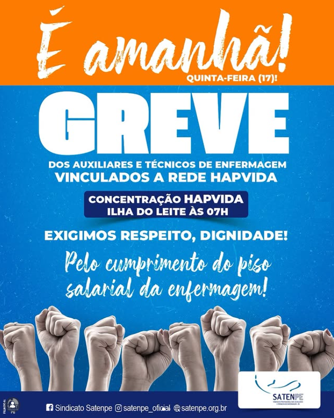

A Luta Pelo Piso

Mobilização de Rua
Greves estratégicas e manifestações que forçaram o diálogo com o poder público e privado.

Presença em Brasília
Articulação direta com parlamentares para garantir que o Piso da Enfermagem se tornasse realidade.
Resultado:
RESPEITO
A estruturação de sindicatos por todo o Brasil servindo como modelo de dignidade para o profissional.
Faça parte do movimento →